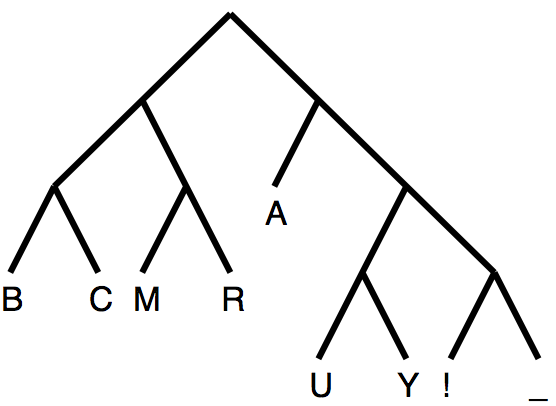
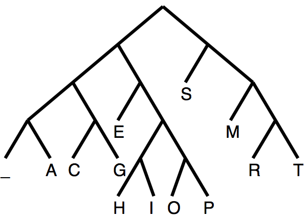
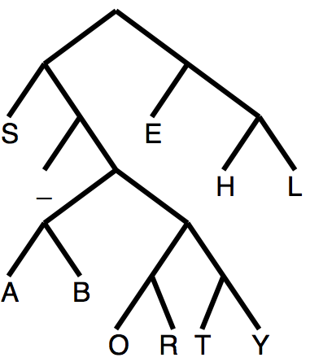

The bit stream representing the message AY CARUMBA! is \[10\ 1101\ 1111\ 001\ 10\ 011\ 1100\ 010\ 000\ 10\ 1110\] The stream contains 34 bits, or \(34/11\approx 3.09\) bits/symbol.
3 (b) The empirical probabilities of the symbols are \begin{array}{ccccccccccccc} \text{ A}&\text{ C}&\text{ E}&\text{ G}&\text{ H}&\text{ I}&\text{ M}&\text{ O}&\text{ P}&\text{ R}&\text{ S}&\text{ T}&\text{ -}\\ \hline \frac{1}{21}&\frac{1}{21}&\frac{3}{21}&\frac{1}{21}&\frac{1}{21}&\frac{1}{21}&\frac{2}{21}&\frac{1}{21}&\frac{1}{21}&\frac{1}{21}&\frac{5}{21}&\frac{1}{21}&\frac{2}{21} \end{array} The Shannon information is \[I=-\sum_{i=1}^{13} p_i\log_2 p_i \approx 3.42.\] A Huffman tree is

The bit stream representing COMPRESS THIS MESSAGE is
\[0010\ 01110\ 110\ 01111\ 1110\ 010\ 10\ 10\ 0000\ 1111\ 01100\ 01101\ 10\ 0000\ 110\ 010\ 10\ 10\ 0001\ 0011\ 010 \] The stream contains 73 bits, or \(73/21\approx 3.48\) bits/symbol.
3 (c) The empirical probabilities of the symbols are \begin{array}{ccccccccccc} \text{ A}&\text{ B}&\text{ E}&\text{ H}&\text{ L}&\text{ O}&\text{ R}&\text{ S}&\text{ T}&\text{ Y}&\text{ -}\\ \frac{2}{35}&\frac{1}{35}&\frac{1}{5}&\frac{4}{35}&\frac{4}{35}&\frac{1}{35}&\frac{1}{35}&\frac{8}{35}&\frac{1}{35}&\frac{1}{35}&\frac{1}{7} \end{array} The Shannon information is \[I=-\sum_{i=1}^{11} p_i\log_2 p_i \approx 3.04.\] A Huffman tree is

The bit stream representing SHE SELLS SEASHELLS BY THE SEASHORE is \[00\ 110\ 10\ 010\ 00\ 10\ 111\ 111\ 00\ 010\ 00\ 10\ 01100\ 00\ 110\ 10\ 111\ 111\ 00\ 010\ \] \[01101\ 011111\ 010\ 011110\ 110\ 10\ 010\ 00\ 10\ 01100\ 00\ 110\ 011100\ 011101\ 10\] The stream contains 108 bits, or \(108/35\approx 3.09\) bits/symbol.